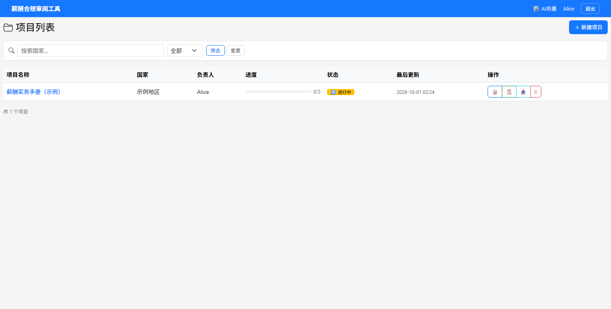

薪酬合规审阅工具Payroll Compliance Review Tool
把多国薪酬规则手册的多人协作审阅，从「互相传文件」变成一个有分工、有留痕、有权限约束的 Web 平台。 Multi-reviewer review of a multi-country payroll handbook — from passing files around to a web platform with assignments, an audit trail and access control.
项目背景Background
跨国薪酬业务需要遵循一套按国家/地区编写的实务规则手册，手册以 Excel 维护， 每一行是一条具体规则。业务上要求定期组织复核：确认这条规则在当前地区是否仍然成立、 附上依据来源、必要时写明修改建议。 Cross-border payroll operations follow a handbook of country-specific rules, maintained as a spreadsheet with one rule per row. It has to be reviewed periodically: confirm whether each rule still holds for its jurisdiction, attach a source, and note a proposed change where one is needed.
问题出在协作方式上。Excel 本身不提供分工能力——谁负责哪一块、谁改了什么、 还剩多少没复核，全都靠人在群里同步。两个人同时打开同一份文件，后保存的会覆盖先保存的。 复核一次要来回传很多轮文件，而且每一轮的修改都无法追溯。 The problem was the collaboration model. A spreadsheet has no notion of assignment — who owns which section, who changed what, how much is left — so all of that lived in chat. Two people opening the same file meant the later save silently overwrote the earlier one. A single review round meant many rounds of file-passing, and none of the edits were traceable.
核心功能Core features
| 功能Feature | 说明What it does |
|---|---|
| 模块化分工Module assignment | 手册按模块切分，每个模块指派校验人；只有被指派的人能编辑该模块，其他人只能查看进度The handbook is split into modules, each assigned to a reviewer. Only the assignee can edit; everyone else sees progress read-only |
| 富文本标注Rich-text annotation | 每条规则用富文本编辑，可加粗、标色、加删除线，表达「这句要改」而不只是「这格不对」Each rule is a rich-text field — bold, colour and strikethrough let a reviewer express this clause should change, not just this cell is wrong |
| 审阅状态Review status | 待审阅 / 已确认 / 需修改 / 待讨论四种状态，贯穿界面与导出，项目进度按未确认字段数计算Four states (pending / confirmed / needs change / to discuss) run through both the UI and the export; progress means "fields still unconfirmed" |
| 依据链接Source links | 每条规则可挂参考依据链接，并标注该链接的状态（有效 / 打不开 / 内容不符 / 已过时）Each rule can carry reference links, each tagged with its own state (valid / broken / mismatched / outdated) |
| Excel 导入导出Excel round-trip | 支持三种历史格式的解析；导出写回与源文件同结构的工作簿，保留列宽与公式Parses three legacy workbook formats; exports back into a workbook matching the source structure, preserving column widths and formulas |
| 权限控制Access control | 项目创建者与被指派者才能访问；写操作在读取权限之上再收紧一层Only the project owner and assignees can reach a project; writes are restricted one level further than reads |
技术架构Architecture
| 层级Layer | 选型Choice | 理由Why |
|---|---|---|
| Web 框架Web framework | Flask + Jinja2 | 服务端渲染为主，页面不需要复杂前端状态；选它能最快把流程跑通Server-rendered pages need little client state; Flask got the workflow running fastest |
| 数据访问Data access | SQLAlchemy + SQLite | 并发量小、部署简单；写锁竞争的问题在应用层用重试与事务边界处理Low concurrency and simple deployment; write-lock contention is handled in the application layer via retries and transaction boundaries |
| Excel 读写Excel I/O | openpyxl | 需要在保留原表格式的前提下写回，纯数据写入的库做不到Writing back while preserving the original formatting rules out data-only libraries |
| 富文本Rich text | Quill（HTML 存储） | 标注结果要能写回 Excel 单元格，HTML 到 RichText 的映射比自定义格式简单Annotations have to land back in Excel cells; HTML maps to RichText more simply than a custom format |
| 部署Deployment | Waitress + 反向代理 | 默认只监听 127.0.0.1，需要多人访问时显式开启或置于代理之后Binds to 127.0.0.1 by default; opening it up is an explicit choice or the proxy's job |
权限判断收敛在一个函数里（project_access_denied），所有涉及项目数据的路由都调用它，
而不是各自写一套 if。这样新增路由时漏掉校验的概率要低得多——这个工具最初的问题正是有 8 个接口完全没做校验。
Access decisions funnel through a single function (project_access_denied) that every
project-scoped route calls, rather than each route rolling its own check. That makes it much harder to forget on a
new route — the original problem here was exactly eight endpoints with no check at all.
界面截图Screenshots


量化成果Outcomes
四个会丢数据的缺陷都是同一类问题的不同表现：操作失败时没有把状态回退到安全点。
上传新文件时先删旧记录再解析，解析失败就等于删掉了全部人工审阅成果；保存字段时遇到数据库写锁竞争，
回滚了整个事务却仍返回成功；导出时用 data_only 读取，把公式连同缓存值一起写成了空白；
翻译失败时错误被吞掉，英文交付物里留了中文。修法各不相同，但都是先确认成功、再提交状态。
All four are the same underlying mistake wearing different clothes: failing to roll back to a
safe state when an operation fails. An upload deleted the old records before parsing the new file, so a parse
failure destroyed every manual review. A field save hit a SQLite write-lock, rolled back its transaction, and still
reported success. An export read with data_only, writing formulas out as blanks along with their cached
values. A translation failure was swallowed, leaving Chinese text in an English deliverable. The fixes differ; the
principle is the same — confirm success before committing state.
关于源码About the source
这个工具围绕真实业务的薪酬合规口径构建，手册内容、字段体系与业务规则均为内部信息，因此源码不公开。 以上展示的是设计与工程取舍，不含任何业务数据。 This tool is built around a real compliance framework — the handbook content, field structure and business rules are internal, so the source is not public. What's shown here is the design and the engineering decisions, with no business data.